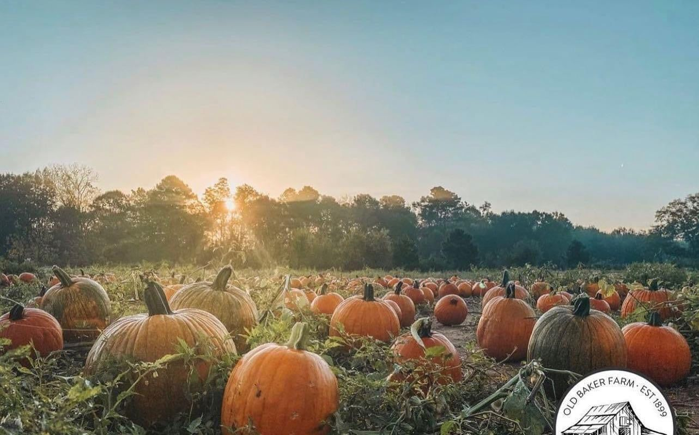
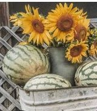
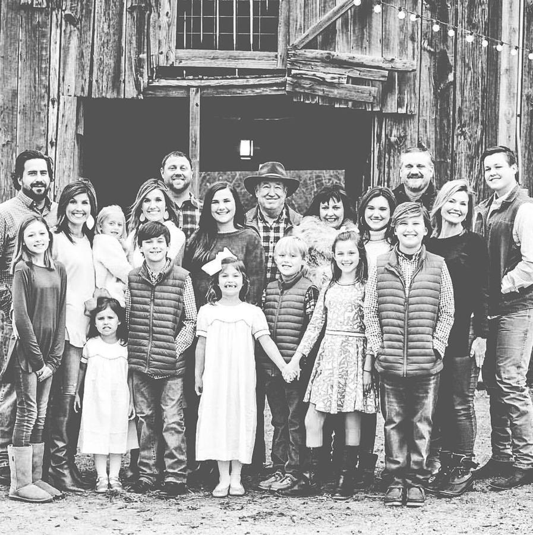
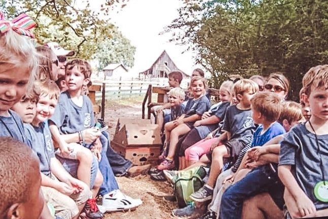

Find your perfect pumpkin on a real working farm.
Six generations of Bakers have worked this land. Every fall, every Christmas, and one summer night in August, we open the gate and invite you in.
A year on the farm
From sunflowers in August to the last tree on Christmas Eve — every day we're open to the public, on one page.
AugSummer
SepHarvest
OctHarvest
NovTrees
Trees open the day after Thanksgiving
DecChristmas
Come back every season
The Pumpkin Patch
Visitors come from all over to find their perfect pumpkin, soak up the rich history, and enjoy a different event every October weekend.
See the weekendsChristmas Tree Farm
Choose and cut your tree, then warm up with complimentary hot apple cider and candy canes.
Tree varieties
Summer Shindig
We close out summer with food trucks, vendors, fireworks, yummy lemonade and acres of sunflowers.
Vendor info
A historic marker of days gone by
Homesteaded over 200 years ago, Old Baker Farm withstood the perils of the Civil War and remains today a traditional family farm — growing everything from cotton to corn, including pumpkins.
Good to know
Children 1 & under are free. 3.5% fee on credit cards.
Weekdays 3–5pm, Sep 26 – Oct 31.

Field trips, all year round
We teach a different lesson every season. In the spring it's rebirth — new plants taking root and baby chicks hatching. In the fall it's the harvest, with pumpkins ready to carve and fields ready to bring in.